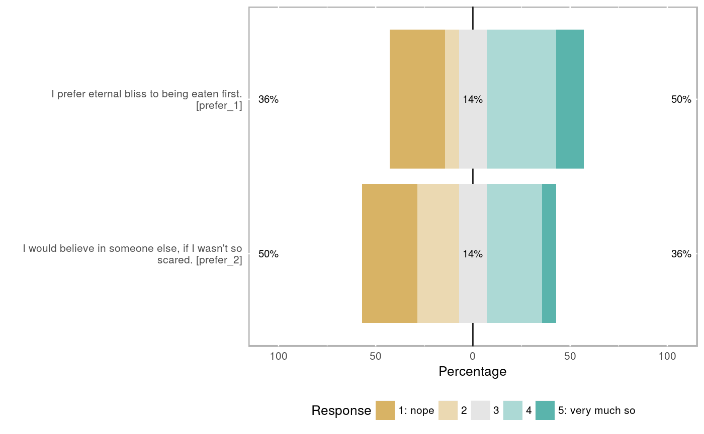

Compute reliabilities
If you pass the object resulting from a call to formr_results to this function, it will compute reliabilities for each scale. Internally, each reliability computation is passed to a future. If you are calculating multilevel reliabilities, it may be worthwhile to parallelise this operation using future::plan If you don't plan on any complicated parallelisation, you probably do not need to call this function directly, but can rely on it being automatically called during codebook generation. If you do plan to do that, you can pass the results of this operation to the codebook function.
compute_reliabilities(results, survey_repetition = "single")
Arguments
| results | a formr results table with attributes set on items and scales |
|---|---|
| survey_repetition | defaults to "single". Can also be "repeated_once" or "repeated_many" |
Examples
if (requireNamespace("formr", quietly = TRUE)) { example("formr_post_process_results", package = 'formr') reliabilities = compute_reliabilities(results) }#> #> frm___> results = jsonlite::fromJSON(txt = #> frm___+ system.file('extdata/gods_example_results.json', package = 'formr', mustWork = TRUE)) #> #> frm___> items = formr_items(path = #> frm___+ system.file('extdata/gods_example_items.json', package = 'formr', mustWork = TRUE)) #> #> frm___> results = formr_post_process_results(items, results, #> frm___+ compute_alphas = TRUE, plot_likert = TRUE)#> #> Reliability analysis religiousness #> Call: psych::alpha(x = results[, scale_item_names], title = save_scale, #> check.keys = FALSE) #> #> raw_alpha std.alpha G6(smc) average_r S/N ase mean sd #> 0.78 0.79 0.77 0.48 3.7 0.093 2.4 0.91 #> #> lower alpha upper 95% confidence boundaries #> 0.6 0.78 0.96 #> #> Reliability if an item is dropped: #> raw_alpha std.alpha G6(smc) average_r S/N alpha se #> religiousness_1 0.81 0.83 0.77 0.62 4.9 0.084 #> religiousness_2R 0.68 0.70 0.67 0.43 2.3 0.151 #> religiousness_3 0.68 0.67 0.62 0.41 2.1 0.140 #> religiousness_4 0.70 0.72 0.65 0.46 2.6 0.129 #> #> Item statistics #> n raw.r std.r r.cor r.drop mean sd #> religiousness_1 14 0.63 0.65 0.45 0.39 2.3 1.07 #> religiousness_2R 14 0.86 0.83 0.74 0.67 2.7 1.44 #> religiousness_3 14 0.83 0.85 0.81 0.72 2.3 0.91 #> religiousness_4 14 0.80 0.80 0.74 0.62 2.3 1.20 #> #> Non missing response frequency for each item #> 1 2 3 4 5 miss #> religiousness_1 0.29 0.29 0.29 0.14 0.00 0 #> religiousness_2R 0.29 0.14 0.29 0.14 0.14 0 #> religiousness_3 0.21 0.36 0.36 0.07 0.00 0 #> religiousness_4 0.36 0.21 0.21 0.21 0.00 0#> #> Reliability analysis prefer #> Call: psych::alpha(x = results[, scale_item_names], title = save_scale, #> check.keys = FALSE) #> #> raw_alpha std.alpha G6(smc) average_r S/N ase mean sd #> 0.76 0.76 0.62 0.62 3.2 0.13 2.8 1.3 #> #> lower alpha upper 95% confidence boundaries #> 0.51 0.76 1.01 #> #> Reliability if an item is dropped: #> raw_alpha std.alpha G6(smc) average_r S/N alpha se #> prefer_1 0.62 0.62 0.38 0.62 NA NA #> prefer_2 0.62 0.62 0.38 0.62 NA NA #> #> Item statistics #> n raw.r std.r r.cor r.drop mean sd #> prefer_1 14 0.91 0.9 0.71 0.62 3.0 1.5 #> prefer_2 14 0.89 0.9 0.71 0.62 2.6 1.4 #> #> Non missing response frequency for each item #> 1 2 3 4 5 miss #> prefer_1 0.29 0.07 0.14 0.36 0.14 0 #> prefer_2 0.29 0.21 0.14 0.29 0.07 0